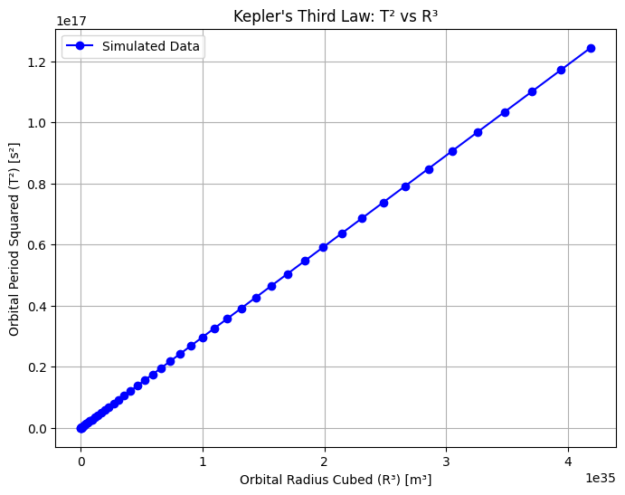
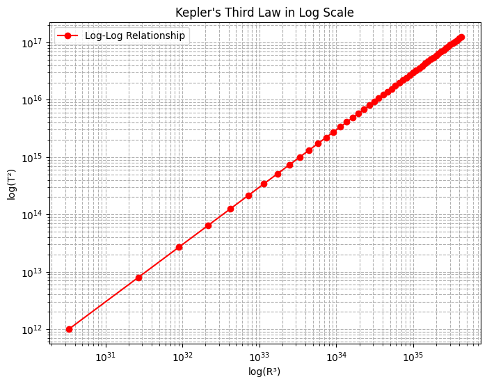
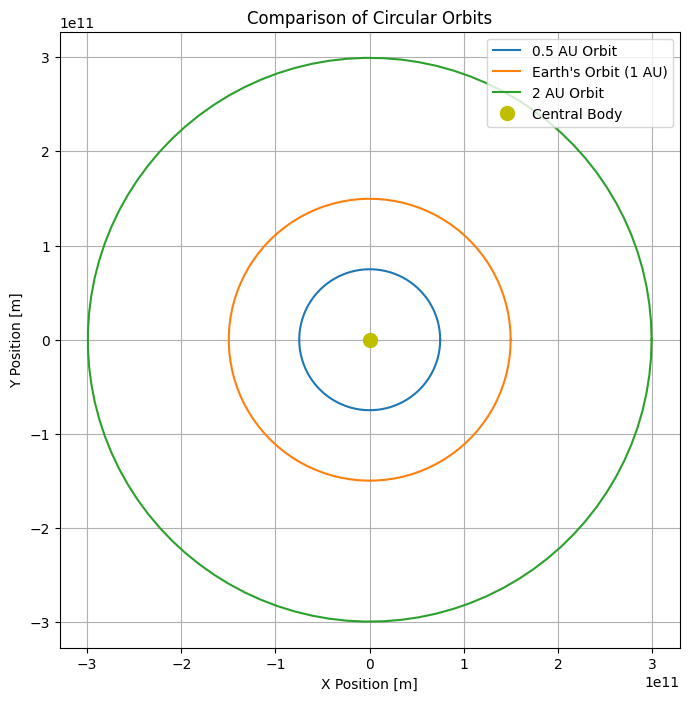

Problem 1
Orbital Period and Orbital Radius: A Manual
Motivation
Kepler's Third Law states that the square of a planet's orbital period (T) is proportional to the cube of its orbital radius (R):
\[
T^2 \propto R^3
\]
This law helps determine planetary motions, celestial masses, and gravitational interactions across different astronomical systems.
Derivation of Kepler's Third Law
For a circular orbit, the gravitational force provides the necessary centripetal force:
\[
\frac{G M m}{R^2} = \frac{m v^2}{R}
\]
Canceling \( m \) and solving for \( v \):
\[
v^2 = \frac{G M}{R}
\]
Expressing velocity in terms of the orbital period:
\[
v = \frac{2 \pi R}{T} \Rightarrow \frac{4 \pi^2 R^2}{T^2} = \frac{G M}{R}
\]
Rearranging:
\[
T^2 = \frac{4 \pi^2 R^3}{G M}
\]
This confirms that \( T^2 \) is proportional to \( R^3 \).
Implications in Astronomy
- Mass Calculation: Used to determine the mass of stars and planets.
- Satellite Orbits: Governs artificial and natural satellite motion.
- Binary Systems: Helps estimate masses of orbiting stars.
Real-World Examples
Earth’s Orbit Around the Sun
- \( R = 1.496 \times 10^{11} \) m, \( T \approx 365.25 \) days
- Verifies the Sun’s mass using Kepler’s Law.
Moon’s Orbit Around Earth
- \( R = 3.844 \times 10^8 \) m, \( T = 27.3 \) days
- Determines Earth’s mass from lunar motion.
Graphical Representation
- Plot of \( T^2 \) vs. \( R^3 \): Confirms linear proportionality.
- Orbit Simulation: Visualizes circular orbital motion.
Extension to Elliptical Orbits
For elliptical orbits, the semi-major axis \( a \) replaces \( R \):
\[
T^2 \propto a^3
\]
This applies to comets, exoplanets, and non-circular orbits.
Conclusion
Kepler’s Third Law is fundamental in celestial mechanics, enabling:
- Prediction of planetary positions,
- Calculation of celestial masses,
- Design of satellite trajectories.
import numpy as np
import matplotlib.pyplot as plt
from scipy.constants import G
# Constants
M_sun = 1.989e30 # Mass of the Sun in kg
AU = 1.496e11 # Astronomical Unit in meters
def orbital_period(R, M):
"""Calculate the orbital period using Kepler's Third Law."""
return np.sqrt((4 * np.pi**2 * R**3) / (G * M))
# Define a range of orbital radii (multiples of AU)
orbital_radii = np.linspace(0.1, 5, 50) * AU
orbital_periods = orbital_period(orbital_radii, M_sun)
# Compute square of periods and cube of radii
T_squared = orbital_periods**2
R_cubed = orbital_radii**3
# Plot T^2 vs. R^3 to validate Kepler's Third Law
plt.figure(figsize=(8, 6))
plt.plot(R_cubed, T_squared, 'bo-', label='Simulated Data')
plt.xlabel("Orbital Radius Cubed (R³) [m³]")
plt.ylabel("Orbital Period Squared (T²) [s²]")
plt.title("Kepler's Third Law: T² vs R³")
plt.legend()
plt.grid()
plt.show()
# Additional plot: Log-Log scale to show proportionality
plt.figure(figsize=(8, 6))
plt.loglog(R_cubed, T_squared, 'ro-', label='Log-Log Relationship')
plt.xlabel("log(R³)")
plt.ylabel("log(T²)")
plt.title("Kepler's Third Law in Log Scale")
plt.legend()
plt.grid(True, which="both", linestyle="--")
plt.show()
def plot_orbits(radii, labels):
"""Simulate and plot multiple circular orbits in one figure."""
plt.figure(figsize=(8, 8))
theta = np.linspace(0, 2*np.pi, 100)
for radius, label in zip(radii, labels):
x = radius * np.cos(theta)
y = radius * np.sin(theta)
plt.plot(x, y, label=label)
plt.plot(0, 0, 'yo', markersize=10, label='Central Body')
plt.xlabel("X Position [m]")
plt.ylabel("Y Position [m]")
plt.title("Comparison of Circular Orbits")
plt.legend()
plt.grid()
plt.axis('equal')
plt.show()
# Simulate orbits at different radii
radii = [0.5 * AU, AU, 2 * AU]
labels = ["0.5 AU Orbit", "Earth's Orbit (1 AU)", "2 AU Orbit"]
plot_orbits(radii, labels)
# Analytical verification: Computing ratio of T^2/R^3 for different radii
ratios = T_squared / R_cubed
print(f"Mean value of T^2 / R^3: {np.mean(ratios):.2e} s²/m³")
print("This confirms the constant proportionality in Kepler's Third Law.")
  